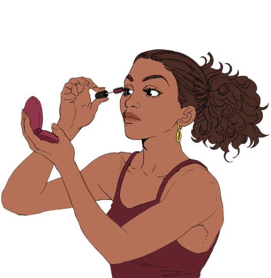

JUVENTUDEBRASILEIRAE O HIBRIDISMOTROPICAL
Estudo proprietário da Vivência Lab em colaboração com a Natura.
A abrangência do estudo
Um retrato nacional, com escuta de perto em territórios que as pesquisas costumam deixar de fora.
Como lemos os dados (perfilamento)
Jovens periféricos
se reconhecem em periferias urbanas, periferias rurais, comunidades e favelas.
Jovens não periféricos
se reconhecem em bairros centrais.
Jovens brasileiros
quando os dois grupos respondem de forma parecida, o dado fala pela juventude do país como um todo.
%203.png)
CONCEITOS PARA LER A JUVENTUDE
BRASILEIRA A PARTIR DELA MESMA
O jovem brasileiro não cabe em achados estrangeiros. Para entender como ele vive, criamos um conceito com duas partes: Hibridismo e Neotropical.
%20JUVENTUDE%20BRASILEIRA%20E%20O%20HIBRIDISMO%20TROPICAL%201.png)
A capacidade de ser muitos ao mesmo tempo para não depender ou ficar preso em um único caminho.
- É a tecnologia de navegação do jovem brasileiro.
Ele combina rendas, territórios, linguagens e identidades para atravessar uma realidade que não oferece garantias. - Trabalha no CLT durante a semana e em projetos próprios no fim de semana.
- Ajusta a imagem para circular pela cidade e driblar riscos e preconceitos. Mistura fé, estética e cultura para aguentar a rotina.
Essa mistura não é confusão nem falta de foco.
É estratégia. O modelo das gerações anteriores, "esforço igual a estabilidade", parou de funcionar. O jovem não está escolhendo entre um caminho e outro: ele está inventando um terceiro caminho, feito da soma dos dois.
Um novo jeito de ser tropical, que nasce nas periferias e pulsa no Brasil e no mundo sem necessidade de tradução ou adaptação.
- Neo porque é cultura em alta frequência: as periferias criam e atualizam códigos, estéticas, músicas e linguagens o tempo todo.
- Tropical porque essa cultura tem chão: nasce do território, do clima, do corpo e da história de quem vive aqui.
O Tropicalismo clássico "devorava" a cultura de fora para devolver algo brasileiro ao mundo. O Neotropical inverte esse movimento. As periferias não precisam consumir o mundo para se validar. Elas afirmam os próprios códigos como centro da inovação, e é o mundo que passa a olhar para cá.
Bloco C: O novo aspiracional
Para as marcas, o Neotropical marca o fim do aspiracional tradicional, em que a marca dita o caminho, e o começo de uma aspiração que reconhece quem o jovem brasileiro já é.
| Aspiracional tradicional (mercado atual) | Aspiracionalidade Neotropical | |
|---|---|---|
| Foco | O que eu quero virar. | Eu já sou o foco. |
| Relação | A marca me "eleva". | A marca me reconhece e amplifica a minha história. |
| Gatilho | Desejo de um estilo de vida com frescor e sucesso. | Orgulho, amplificando a realidade de forma coerente. |
| Produto | Protagonista da transformação. | Aliado do território e da jornada de conquista. |
Como pensamos o Brasil
a partir da própria realidade brasileira?
Deixamos de lado as fórmulas prontas de pesquisa de mercado e as lentes estrangeiras. Nosso método nasce e se valida na realidade do território, em quatro movimentos.
A metodologia da Vivência Lab:

Navegue passando para o lado
1Decodificar o sistema de inteligência cultural brasileira
investigamos como o brasileiro cria estratégias, signos, rituais e linguagens para circular entre territórios diferentes.
2Reconhecer tecnologias nativas e assets de inovação
tratamos a música, a estética e a linguagem das ruas como ativos estratégicos, e não como tendência passageira ou folclore. São eles que dão legitimidade, coerência e valor cultural às marcas.
3Validar com filtros de conexão e realidade
fazemos um diagnóstico de viabilidade e naturalidade para garantir que a marca use linguagem e estética coerentes e se conecte sem ruído.
4Implementar a estratégia cultural
desenhamos o papel de marcas, produtos e serviços no dia a dia do brasileiro, com narrativas e caminhos de ação em que a marca vira combustível do orgulho de quem o público já é.
Como o estudo foi construído:
Deslize para o lado
Etapa 1
Mapeamento de rastros e contrastes: comparamos o que as pesquisas nacionais e internacionais dizem sobre os jovens com a realidade do Brasil, e mapeamos onde elas falham ao tratar todos os jovens como iguais.
Etapa 2
Escuta ativa: 18 imersões qualitativas com jovens das 5 regiões do Brasil e 6 entrevistas de profundidade com especialistas que estão pensando o Brasil a partir do próprio Brasil. Buscamos entender os extremos, os pontos de contato, divergências e os pilares que definem o que é ser jovem no Brasil hoje.
Etapa 3
Coleta nacional: 2.300 respondentes nas 5 regiões, entre painel online e coletas presenciais feitas por agentes locais em Amazonas, Ceará, Tocantins e litoral de São Paulo. Garantimos uma coleta abrangente das juventudes do nosso país.
O Triângulo de Pressão:
o que pesa no dia a dia do jovem brasileiro
Antes de falar de consumo, é preciso falar de contexto. Três desafios aparecem juntos na vida dos jovens e ajudam a explicar por que eles recusam o modelo de vida das gerações anteriores.
%20JUVENTUDE%20BRASILEIRA%20E%20O%20HIBRIDISMO%20TROPICAL%20(6)%201.png)
Deslize para o lado
Instabilidade
A incerteza financeira impede planejar a vida (carreira, estudo, viagens) além do próximo mês.
Urgência
A ansiedade de que o sucesso, o reconhecimento e a estabilidade precisam acontecer agora.
Sobrecarga
o cansaço mental de ser multitarefa, equilibrar vários corres e resolver tudo sozinho.
O peso muda
conforme o território:
A ansiedade é o maior desafio para 53% dos jovens não periféricos. Para 51% dos jovens periféricos, o maior desafio é a instabilidade financeira.
O que segura
a travessia:
41% dos jovens encontram na fé a sua principal força emocional. Aqui a fé é prática: para 40%, ela serve para "dar certeza de que isso também vai passar".
O filtro de conexão com a realidade
É diante desse triângulo que o cuidado ganha outro sentido. Para 71,8% dos jovens, comprar um produto de beleza ajuda a aliviar o estresse, e só 1 em cada 10 abre mão de tudo quando o dinheiro aperta. Beleza e autocuidado não são luxo: são fôlego. Funcionam como manutenção da vida, ritual de descompressão e escudo para circular pela cidade.
O jovem periférico não tem o luxo do erro calculado. Cada escolha de consumo, de estética, de comportamento é feita sob pressão de consequências reais e imediatas.

Para o não periférico, a experimentação estética opera em modo de curadoria, há peso social, mas raramente custo físico.
%20JUVENTUDE%20BRASILEIRA%20E%20O%20HIBRIDISMO%20TROPICAL%20(2)%201.png)
%20JUVENTUDE%20BRASILEIRA%20E%20O%20HIBRIDISMO%20TROPICAL%20(4)%201.png)
Se o hibridismo é a tecnologia de navegação,
a vida desse jovem é uma travessia permanente.
De um lado da ponte está o modelo herdado dos pais e avós, com uma segurança que os jovens já entenderam ser ilusória. Do outro, a autonomia que eles desejam. A maior parte da juventude está no meio do caminho.
Passe o mouse ou toque nos balões para conhecer cada etapa.Clique em uma fase para ver mais

O vislumbre da ponte (15-19 anos)
o primeiro choque com o sistema. 45,3% ainda estão focados nos estudos, mas 28,3% já sentem a pressão de equilibrar estudo e trabalho. Aqui, a ponte é promessa e susto.
A entrada na ponte (20-24 anos)
o "olho do furacão" e o ponto de maior hibridismo. A conciliação entre trabalho e estudo chega ao pico (42,3%), e a ansiedade pelo sucesso imediato aperta mais.
A caminhada na ponte (25 - 30 anos)
a travessia fica mais prática. Quase metade (49%) foca no trabalho, mas 35,7% ainda mantêm estudos ou projetos paralelos. O trabalho formal deixa de ser destino e vira infraestrutura.
"Não dá para viver de um único trabalho, para realizar meus sonhos preciso ter estratégias. Durante a semana eu trabalho no CLT, mas nos finais de semana me dedico aos meus projetos pessoais."
Quais são os principais dilemas dos jovens brasileiros?
O estudo revela três movimentos na forma como os jovens brasileiros se relacionam com o trabalho, com a autoestima e com o consumo de marcas e produtos.
Deslize para o lado
Movimento 1Hibridismo como Tecnologia
- 71,5% dos jovens brasileiros aceitariam um emprego só pelo dinheiro, desde que possam manter projetos próprios. O trabalho paga as contas, os projetos preservam a autonomia.
Não é sobre a performance do excesso. É sobre estratégias para não ser refém de um projeto de vida que falhou nas gerações passadas, onde a quantidade de esforço nunca foi igual ao sucesso.
Movimento 2Passaportes de autonomia e descompressão do eu
- Só 22% dos jovens brasileiros dizem ser "o mesmo em todo lugar". Mudar para circular não é falsidade: é tecnologia de segurança.
- 44,2% dos jovens periféricos mudam a roupa ou o jeito de falar em shoppings e bairros ricos (32,2% entre os não periféricos).
- Diante de uma viatura, o jovem preto ajusta a própria imagem 2,3 vezes mais do que o jovem branco não periférico.
- 60% dos jovens brasileiros dizem que a estética os faz sentir no controle da própria história, e 51,4% afirmam que a autoestima vem de escolhas internas. Só 18,1% buscam reconhecimento externo.
O autocuidado é o único momento em que esses jovens se sentem donos de si mesmos, e não estão a serviço de ninguém.
Movimento 3Movimentos culturais brasileiros e periféricos como assets de inovação.
- 50% dos jovens brasileiros rejeitam marcas que parecem "fantasiadas" da cultura brasileira.
- 50,7% dos jovens brasileiros priorizam marcas que representam "pessoas como eu".
- 70% dos jovens periféricos mantêm raízes, estética e cultura mesmo quando circulam por espaços da elite, e 66% sentem profundo orgulho do território onde vivem.
A linha entre conexão autêntica e coerente passa por diferentes filtros e critérios, para falar com a juventude brasileira é necessário ir além de acompanhar as trends.
Da evidência à ação:
leve o estudo para dentro da sua marca
A marca deixa de ser destino e passa a ser infraestrutura de afirmação. Escolha o formato que cabe no momento do seu negócio.
Palestra
Apresentamos os dados e os conceitos do estudo, adaptados ao setor da sua empresa, e desmontamos os mitos mais comuns sobre a juventude brasileira.
O que você leva: um repertório rico para o time e as perguntas certas para o próximo briefing.
Workshop
Uma sessão prática com os frameworks da Vivência Lab, para revisar processos atuais e criar protótipos de soluções para os desafios da sua marca.
O que você leva: protótipos testáveis e um plano de próximos passos.
Consultoria em Inteligência Cultural
Projetos sob medida para conectar sua marca à juventude brasileira, periférica ou não. Avaliamos o seu desafio e criamos um estudo estratégico para lançamentos, reposicionamentos ou comunicação dos seus produtos/serviços com os jovens.
O que você leva: um estudo personalizado e recomendações claras para o seu negócio.
Quem já está acionando os insights deste estudo ao lado da Vivência Lab?

Ciclo de formações sobre os aprendizados e aplicação dos insights do estudo para diferentes áreas dentro da marca.
Pesquisa e consultoria estratégica para o relançamento do Mizuno Wave Prophecy 1 no Brasil. Um produto aclamado pelas periferias que foi descontinuado e voltou para as lojas oficias depois de 15 anos do seu lançamento.
Curadoria, gestão de comunidade e estratégia cultural pensando o território de São Paulo desde outubro de 2025.
Quer saber mais?Falar com especialista
Sobre a Vivência Lab
A Vivência Lab é um ecossistema de inteligência cultural periférica e brasileira. Nascemos em 2019 como movimento cultural, registrando as cenas das ruas e das periferias. Há cerca de 1 ano e 10 meses atuamos como empresa, decodificamos comportamentos, signos e tecnologias sociais do Brasil e transformamos esse conhecimento em direção estratégica para marcas, unindo rigor de pesquisa e vivência real das ruas.